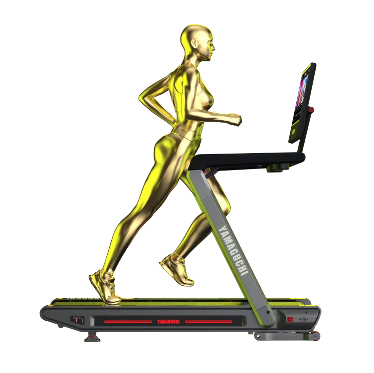

1.
Как заниматься спортом, не тратя время на дорогу в спортзал?
В холодном климате России городские жители не всегда могут позволить себе, например, утреннюю пробежку. Поэтому беговая дорожка дома – идеальное решение для регулярных занятий спортом!
Yamaguchi MAX PRO – первая складная профессиональная дорожка с максимальным углом наклона до 15% и запатентованной системой амортизации, которые увеличивают эффективность тренировки и снижают ударную нагрузку с позвоночника, коленных суставов и связок.
Беговая дорожка с сенсорным экраном и доступом в Интернет, установленными приложениями и мессенджерами, встроенной фронтальной камерой и микрофоном даёт возможность совмещать любые задачи с тренировками, не переносить важные встречи и всегда оставаться на связи!